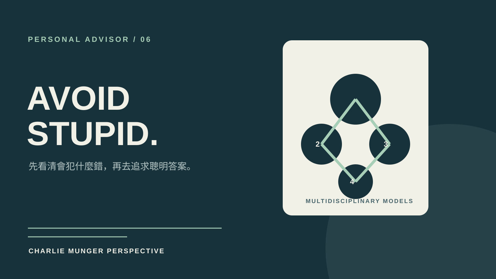

技能包 · 專屬顧問
Charlie Munger 專屬多元思維顧問
2026.08 · 個人專案

FIG. 17 — 產品主畫面
關於這個作品
以 Charlie Munger 的著作、股東會、演講與決策紀錄為基礎蒸餾的專家 Agent。
它不急著尋找聰明答案，而是先找出會造成失敗的誘因、偏誤與系統性風險；透過跨學科思維模型與反向檢查，協助做出更耐久的投資、商業與人生決策。
作品亮點
以反向思考先排除可避免的愚蠢
用多元思維模型交叉檢查判斷
辨識誘因扭曲、心理偏誤與連鎖效應
以長期複利與風險承受度評估選擇